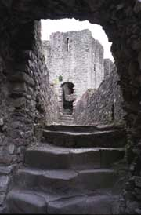
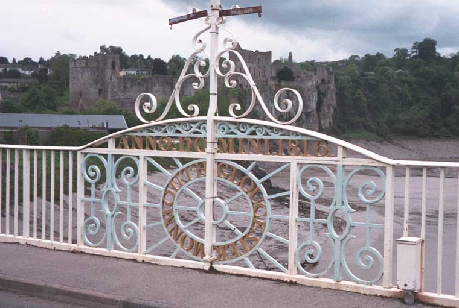
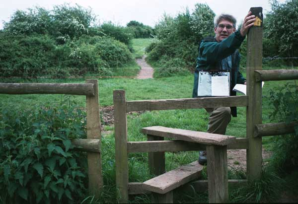
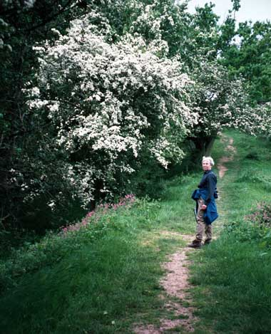

On our arrival day, we took a bus from Heathrow to
Chepstow. We walked down through the old city gate to our
guest house across from the castle. After taking our
backpacks up to our room and putting on our boots, we set
out. First we visited the castle, which is an impressive
ruin. It was built at various times; much of the castle
built in 1067 by a friend of William the Conqueror is still
standing. Most of the rest was added in the 13th century.
|  |  |
Inside Chepstow Castle On Rennie's Bridge, Chepstow Castle behind country boundary marker
After admiring the castle, we crossed the Wye on the Rennie
Bridge, thus walking back into England. We were impressed
by how low the river was. It's tidal, and rises and falls
about 50 feet at Chepstow. We walked the two miles down to
Sedbury Cliffs, the "official" start of the Offa's Dyke
Path. On our way we crossed the first of the estimated 650
stiles on the route! We also did our first stretch of
walking on the dyke itself. We were surprised to find that
the path goes along the actual dyke; we had thought that it would
be protected for historical conservation purposes. But
there were many miles, as it turned out, of walking on top the
dyke. Another first that afternoon: we had our first
view of the spectacular show of hawthorns in bloom. They're
small trees (or big hedge bushes) totally covered in white
blossoms.
|  |  |
First stile! First walk on Offa's Dyke and first hawthorns
Back in Chepstow, we stopped in Tesco and bought apples and prepackaged salads and took them back to our room for our dinner. Then, after repacking our backpacks, bleary-eyed from lack of sleep, we went to bed.
| Next Day | Home Page |